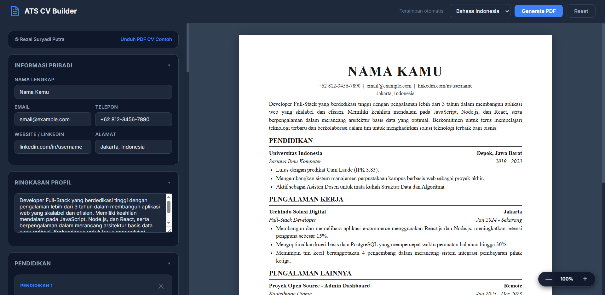

Isi Data CV
Lengkapi profil, pendidikan, pengalaman, dan keahlian lewat form yang mudah diedit.
CV Builder ATS-Friendly
Tulis CV sekali, cek hasilnya langsung di format A4, lalu unduh PDF yang siap kamu kirim ke recruiter.

Cara Kerja
Lengkapi profil, pendidikan, pengalaman, dan keahlian lewat form yang mudah diedit.
Setiap perubahan langsung terlihat dengan tata letak yang sudah dioptimalkan untuk ATS.
Dapatkan CV PDF yang bersih, rapi, dan siap dikirim ke recruiter atau job portal.
Mulai gratis sekarang, lalu dukung project ini dengan memberi bintang di GitHub.
FAQ
Ya. Semua fitur utama untuk menulis, preview, dan ekspor PDF bisa dipakai gratis di browser.
Data disimpan lokal di browser lewat localStorage, sehingga tidak dikirim ke server eksternal.
Bisa. PDF sudah diformat rapi, ATS-friendly, dan siap kamu kirim untuk lamaran kerja.